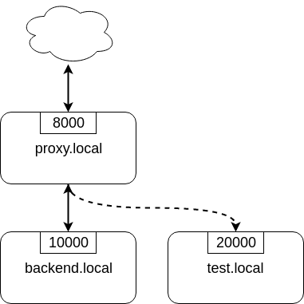

Unofficial - F5 Certification Exam Prep Material > F5 N1-N4 - NGINX OSS - NOT CREATED Source | Edit on
F5N2 - Configuration: Knowledge¶
TODO
Objective - 1.1 Configure NGINX as a load balancer¶
1.1 - Define the load balancing pools/systems¶
http://nginx.org/en/docs/http/load_balancing.html
https://docs.nginx.com/nginx/admin-guide/load-balancer/tcp-udp-load-balancer/
upstream directive
Defining a load balancing pool is as simple as writing the upstream
directive in an http or stream block. Please refer to the referenced
pages for details.
The simplest configuration for load balancing with nginx may look like the following:
http {
upstream myapp1 {
server srv1.example.com;
server srv2.example.com;
server srv3.example.com;
}
server {
listen 80;
location / {
proxy_pass http://myapp1;
}
}
}
In the example above, there are 3 instances of the same application running on srv1-srv3. When the load balancing method is not specifically configured, it defaults to round-robin. All requests are proxied to the server group myapp1, and nginx applies HTTP load balancing to distribute the requests.
1.1 - Explain the different load balancing algorithms¶
Different algorithms for different needs
The referenced resource explains in details each algorithm. The algorithms available in NGINX OSS are the following:
- default: round-robin
- least connections with
least_conn - ip hash with
ip_hash - generic hash with
hash - random with
random
Note that for these methods, one can also define a weight parameter, that
influence some server over others when making the upstream server choice with a
defined weight.
1.1 - Describe the process used to remove a server from the pool¶
https://docs.nginx.com/nginx/admin-guide/load-balancer/http-health-check/#passive-health-checks
https://nginx.org/en/docs/http/load_balancing.html
https://nginx.org/en/docs/http/ngx_http_upstream_module.html#server
Manually remove a server from a pool
Let us say you have an upstream pool such as the one showed in the following configuration file:
1 2 3 4 5 | upstream backend {
server backend1.example.com;
server backend2.example.com:8080;
server backend2.example.com:8081;
}
|
You may want to perform some maintenance on the server backend1.example.com
and therefore, temporarily remove it from the pool. Removing the line 2 and
reloading the configuration file with nginx -s reload will make NGINX not
choose this upstream server for any new incoming connection. Another cleaner
possibility would be to use the down option such as:
1 2 3 4 5 | upstream backend {
server backend1.example.com down;
server backend2.example.com:8080;
server backend2.example.com:8081;
}
|
Where you perform a minimal alteration on your file. Note that this may lead to connection loss for clients that were proxied to the backend1 server when you run the configuration reload command.
Automatic removal with passive health checks
NGINX also manages automatic removal of pool members using the passive health checks. If the response from a particular server fails with an error, nginx will mark this server as failed, and will try to avoid selecting this server for subsequent inbound requests for a while.
The max_fails directive sets the number of consecutive unsuccessful attempts to communicate with the server that should happen during fail_timeout. By default, max_fails is set to 1. When it is set to 0, health checks are disabled for this server. The fail_timeout parameter also defines how long the server will be marked as failed. After fail_timeout interval following the server failure, nginx will start to gracefully probe the server with the live client’s requests. If the probes have been successful, the server is marked as a live one.
1.1 - Describe what happens when a pool server goes down¶
This aspect is covered in the previous part on health check.
1.1 - Explain what is unique to NGINX as a load balancer¶
https://www.f5.com/company/events/webinars/nginx-plus-for-load-balancing-30-min (from 6:40 to 10:20 notably)
What are the other load balancing methods
- DNS Rounds Robin
This method is quite simple and can be easily and cheaply configured: to load balance between 3 servers with 3 different IPs, the DNS record for the service (example.com for example) is configured to one element among an array of 3 IP addresses. Clients, receiving these, will contact the server with the received IP address, allowing to distribute load among clients as long as the DNS server returns different results to different clients.
However, this lacks on the update speed: updating DNS records can take time and a server that is down may be served to some client for a long time. Also, this method does not scale well as it requires managing every growing DNS records which can be complicated.
- Hardware L4 load balancer
- These are advanced network switches that do not handle a full TCP stack but stream TCP packets and track the TCP sessions using the attributes they find in the TCP header. They deliver great performances but are limited in terms of available features: out of order and broken TCP packets are not easy to handle and lead to a reduced flexibility.
- Cloud solutions
- Cloud providers often provide their own load balancing systems (Amazon’s Elastic Load Balancer for example). However, these totally depend on the exposed interface from the Cloud provider’s system, potentially giving a lower flexibility.
Where NGINX stands and what challenges it can overcome
NGINX is in the category of the Software load balancer. This refers to reverse proxy systems: these are software applications running on machines having their own full TCP stack (Linux or FreeBSD machines for example). The particularity is that it terminates the TCP connection and handles it. It afterward processes the content of the connection as desired, and reopen a TCP connection to the upstream server, using any implementable software method to load balance between different servers. This gives the maximum degree of flexibility to control the received connection and stream and apply logic to ensure performance and security.
For example, with NGINX, one can perform load balancing depending on HTTP content (session cookies, request URIs, …) as the reverse proxy terminates the TCP connection, it has the ability to use any L4-L7 information to perform load balancing decision.
Also, NGINX being implemented using low level performant C code, it benefits from excellent performances despite being software based, which is a key aspect to efficient load balancing.
The following diagrams picture the different ideologies between the different types of load balancers.
{kind=link}
{kind=link}
{kind=link}
1.1 - Describe how to configure security¶
https://docs.nginx.com/nginx/admin-guide/security-controls/
https://docs.nginx.com/nginx/admin-guide/monitoring/logging/
L4-L7 security
This given objective may sound quite vague, and it is not clear why it stands in this section about load balancing as it could be a section in itself. Considering this, the reader is advised to be familiar with all the NGINX security controls available in NGINX OSS that we will list here and are detailed in the linked documentation.
- NGINX as an HTTPS/SSL server: NGINX can handle and terminate TLS/SSL
communications. The simple default but customizable at will principle also
applies here: 3 directives allow setting up NGINX as an HTTPS reverse proxy
load balancer, but other options can be enabled (mTLS, OCSP, SNI
validation…). Note these are available in
http {}andstream {}blocks. - NGINX as a perimeter authentication system: NGINX supports authentication
protocols (limited in NGINX OSS) to ensure the desired
server {}orlocation {}blocks are protected and authenticated. - Rate/bandwidth control: NGINX can be configured to limit the request rate/amount or the served bandwidth to some clients to prevent abuses.
- IP based restrictions: NGINX can restrict access to some routes or some servers based on the client’s IP.
- NGINX as an HTTPS/SSL client: NGINX can finally handle secured connections to upstream servers with again, simple defaults and some granular control to enable options.
Also, considering observability as a security property, take note of the logging configuration of NGINX, notably its centralisation capabilities with easy to configure log sending to a syslog server.
1.1 - Modify or tune a memory zone configuration¶
http://nginx.org/en/docs/http/ngx_http_limit_conn_module.html#limit_conn_zone
http://nginx.org/en/docs/http/ngx_http_limit_req_module.html#limit_req_zone
http://nginx.org/en/docs/http/ngx_http_js_module.html#js_shared_dict_zone
http://nginx.org/en/docs/http/ngx_http_proxy_module.html#proxy_cache_path
http://nginx.org/en/docs/http/ngx_http_upstream_module.html#zone
Memory zones in NGINX
When configuring memory zones in NGINX, we generally refer to shared memory zones, as seen and explained in the previous module. To modify or tune these, we must first identify where they appear in our NGINX configurations. In NGINX OSS, shared memory zones can be configured in the following contexts:
- The connection limiting: sharing across worker the state of clients regarding the amount of connection requests.
- The request limiting: sharing across worker the state of clients regarding the amount and nature of HTTP requests.
- The JavaScript shared dictionary: sharing across workers JS structures in the form of dictionary.
- The proxy caching: sharing across workers the key/value pairs associating requests parameters with cached content location on the disk.
- The upstream pools: sharing across workers the state of upstream services of pools for updating their status (alive, down, served X times, …)
What can be configured and tuned
In each of the aforementioned contexts, different directives allow to configure the shared memory zones corresponding. For most of these, this zone has only 2 parameters: a name (used to identify a same zone multiple times in the config), and a size in bytes.
The size parameter can be tuned and engineered to correspond to the nature of the application and the server’s resources. For example, knowing that a shared JS dictionary should only have a few small entries, on can allocate only a few kilobytes preventing the allocation of megabytes of memory and not using it.
For details on the different syntaxes, the reader should refer to the mentioned links to the documentation.
1.1 - Describe how to configure NGINX as mirroring server¶
https://alex.dzyoba.com/blog/nginx-mirror/
http://nginx.org/en/docs/http/ngx_http_mirror_module.html
https://thelinuxnotes.com/index.php/mirroring-requests-to-another-server-with-nginx/
The concept of mirroring requests in NGINX
In the context of reverse proxying, request mirroring refers to making the reverse proxy, proxy requests to a mirroring server, “as if” it was an actual backend upstream server. However, the specificity lies in the fact that NGINX does not actually forward the mirror server’s response back to the client. This for example allows to test a new, off-production backend server with real clients’ requests and assess its functionalities before pushing it to production.
The following diagram from Alex Dzyoba’s blog provides a visual representation of a mirroring setup where NGINX would both, proxy the actual client’s request to the real backend server, as well as mirroring this request to a test server.
{kind=link}
Configure NGINX to mirror requests
NGINX uses the directives from the ngx_http_mirror_module to implement the
mirroring.
The following configuration defines 2 locations: the first where NGINX should:
- mirror the client’s request to its
/mirrorURI - proxy the request to the real backend, picked from the upstream pool named
backend.
The second location is internal (meaning it can only be reached by NGINX
itself, not from the outside), and defines what should happen to the requests
made to the /mirror endpoint. They should be proxied to another backend,
picked from the test_backend pool.
location / {
mirror /mirror;
proxy_pass http://backend;
}
location = /mirror {
internal;
proxy_pass http://test_backend$request_uri;
}
1.1 - Describe how to configure NGINX as a layer 4 load balancer¶
https://docs.nginx.com/nginx/admin-guide/load-balancer/tcp-udp-load-balancer/
TCP/UDP load balancing
In the same fashion as NGINX can be configured as a Layer 7 (HTTP) load
balancer, the same can be done at the Layer 4 with a similar syntax: one must
configure an upstream servers group with the upstream directive and can
afterward use the proxy_pass directive to proxy the requests at layer 4 to
the upstream pool.
The following configuration defines an upstream pool composed of 3 servers: the first 3 are active while the last 2 are backup (they receive requests only when one of the active server is down). The first server is preferred in the load balancing algorithm by a factor of 5. The load balancing algorithm uses the hash algorithm by taking the remote client’s address as a key.
upstream backend {
hash $remote_addr;
server backend1.example.com:12345 weight=5;
server backend2.example.com:12345;
server unix:/tmp/backend3;
server backup1.example.com:12345 backup;
server backup2.example.com:12345 backup;
}
server {
listen 12346;
proxy_pass backend;
}
1.1 - Describe how to configure NGINX as an API Gateway¶
https://www.f5.com/company/blog/nginx/deploying-nginx-plus-as-an-api-gateway-part-1
NGINX as an API gateway
To answer these aspects, I could not propose a better guide than the one you can find in the references, written by Liam Crilly. The following is the article’s table of content, curated to remove NGINX+ specific content as it is not covered by the certification.
- Configuring the API gateway
- Introducing the Warehouse API
- Organizing the NGINX Configuration
- Defining the Top-Level API Gateway
- Single-Service vs. Microservice API Backends
- Defining the Warehouse API
- Choosing Broad vs. Precise Definition for APIs
- Rewriting Client Requests to Handle Breaking Changes
- Responding to Errors
- Implementing Authentication
- API Key Authentication
- Protecting backend services
- Rate Limiting
- Enforcing Specific Request Methods
- Applying Fine-Grained Access Control
- Controlling Access to Specific Resources
- Controlling Access to Specific Methods
- Controlling Request Sizes
- Validating Request Bodies
- A Note about the
$request_bodyVariable
- Publishing gRPC Services
- Defining the gRPC Gateway
- Running Sample gRPC Services
- Routing gRPC Requests
- Precise Routing
- Responding to Errors
- Authenticating Clients with gRPC Metadata
- Applying Rate Limiting and Other API Gateway Controls
These constitute an excellent recipe for configuring NGINX as an API gateway. Of course not all elements need to be applied, and some elements may already be performed by the application (controlling the body content), but this recipe shows how to take any app (even a legacy or lazy one) and configure a secure and efficient API gateway.
Objective - 1.2 Configure NGINX as a content cache server¶
1.2 - Define a minimum retention policy¶
https://blog.nginx.org/blog/nginx-caching-guide
https://nginx.org/en/docs/http/ngx_http_proxy_module.html#proxy_cache_path
Minimum retention policy
When speaking of a caching system, a minimum retention policy refers to the minimum time an element is accessible from a cached location. Concretely, imagine we cache the content served from the upstream server at endpoint http://upstream/data/1. A minimum retention policy defines the minimum time (m seconds) NGINX would keep the cached version of the upstream’s response: we would be sure to always have the cached version for m seconds after the initial cache insertion.
NGINX cache minimum retention
TODO (I can’t see how to do this, I see a maximum cache retention through the
inactive=time directive, but to me files can always be quickly evicted from
cache if they are not hit often enough and many other cache write are coming)
1.2 - Describe how to configure path REGEX routing¶
https://www.f5.com/company/blog/nginx/regular-expression-tester-nginx
https://nginx.org/en/docs/http/ngx_http_core_module.html#location
https://nginx.org/en/docs/http/request_processing.html
URI routing in NGINX
When NGINX receives a request, it first tries to find a matching server {}
block to send the request to. Once this is done, NGINX processes the request’s
URI to find a matching location {} block among the one in the matched
server. This process is crucial and very error-prone, the reader must
familiarize with the location matching process to prevent errors. The matching
process is described as follows:
The matching is performed against a normalized URI, after decoding the text encoded in the “%XX” form, resolving references to relative path components “.” and “..”, and possible compression of two or more adjacent slashes into a single slash.
A location can either be defined by a prefix string, or by a regular expression. Regular expressions are specified with the preceding “~*” modifier (for case-insensitive matching), or the “~” modifier (for case-sensitive matching). To find location matching a given request, nginx first checks locations defined using the prefix strings (prefix locations). Among them, the location with the longest matching prefix is selected and remembered. Then regular expressions are checked, in the order of their appearance in the configuration file. The search of regular expressions terminates on the first match, and the corresponding configuration is used. If no match with a regular expression is found then the configuration of the prefix location remembered earlier is used.
Location blocks can be nested, with some exceptions mentioned below.
For case-insensitive operating systems such as macOS and Cygwin, matching with prefix strings ignores a case (0.7.7). However, comparison is limited to one-byte locales.
Regular expressions can contain captures (0.7.40) that can later be used in other directives.
If the longest matching prefix location has the “^~” modifier then regular expressions are not checked.
Also, using the “=” modifier it is possible to define an exact match of URI and location. If an exact match is found, the search terminates. For example, if a “/” request happens frequently, defining “location = /” will speed up the processing of these requests, as search terminates right after the first comparison. Such a location cannot obviously contain nested locations.
Shortening this description is error-prone, therefore we advise familiarizing with it. The following points can be surprising:
- By default, a REGEX match supersedes a prefix match (irrelevantly of the length of the match)
- Options “=” and “^~” disable the checking of REGEX matches
- The first matched REGEX stops the matching check process: the order matters and there is not such thing as longest matched REGEX (fortunately so)
Among other points. The referenced [blog post](https://www.f5.com/company/blog/nginx/regular-expression-tester-nginx) from Rick Nelson gathers interesting examples and an explanation for a tester software you can run to check which routes match a given REGEX location. Check examples from the NGINX documentation to familiarize with REGEX and locations definitions in NGINX.
1.2 - Describe the why and how of caching in NGINX¶
https://docs.nginx.com/nginx/admin-guide/content-cache/content-caching/
Kapranoff, Nginx Troubleshooting, 82.
http://nginx.org/en/docs/http/ngx_http_proxy_module.html
Caching reduces load and speeds up
The main reasons why one would like to cache in NGINX in because NGINX presents the advantage of being an intermediate between the client and the upstream servers. This leads to the following advantages:
- Caching at NGINX reduces load on the backend servers by processing and serving some requests without having to re-ask the upstream to do it.
- Caching at NGINX speeds up the response process as there are fewer intermediates that need to be contacted to answer the client’s request (everything between NGINX and the backend server is not involved when serving a cached response).
How does NGINX enable caching
There are different ways to ensure the served web content gets cached with
NGINX. We will here focus on the literal sense of using NGINX “as a caching
server”; namely, we will see how to make NGINX being the node serving cached
content in the web content retrieval process. Nonetheless, when engineering
your caching system, do not forget that you can make use (and use NGINX’s
capabilities to do so) of the HTTP headers such as Cache-Control. But this
makes web client become the caching actors, and we may want to get more control
on cached content by making it closer to the upstream servers. This is where
NGINX comes in handy.
Enabling caching on NGINX means making NGINX storing the content obtained from the upstream servers to serve it later, when an “identical” requests comes in, without having to contact the upstream server. This raises two interesting points that we will immediately answer:
- Where is this content cached?
- The content gets cached on the NGINX host’s file system, at the path
specified with the
proxy_cache_pathdirective. Generally, this means it gets stored on the disk of the machine where NGINX is hosted. Nonetheless, it is absolutely compatible with systems having other kinds of storage mounted on the filesystem (you could mount a NFS or RAMFS endpoints and store the cache there). Note that this is where the actual cache content (HTML, JSON, or any web result returned by the upstream server to be sent to the client). Caching in NGINX also involves cache keys that are discussed in the next point.
- The content gets cached on the NGINX host’s file system, at the path
specified with the
- When does NGINX know how to serve cached content and when the request should
be forwarded to upstream?
- When NGINX performs content caching and receives a new request, it must
decide between “forwarding the request to upstream” or “hitting cache and
serving what I cached earlier”. Of course the algorithm to decide on this
is more complex that what we will explain, but the idea stays the same.
NGINX uses under the hood hash tables to map requests to cached content.
Therefore, to know if cached content already exists for some kind of
request, it will see if the request’s key matches an existing value. The
keys are stored in a shared memory zone defines with the
proxy_cache_pathdirective. Theproxy_cache_keydirectives helps to define what NGINX considers as two identical requests. By default, requests with the same$scheme$proxy_host$uri$is_args$argsare considered identical and get served the same cached content. Otherwise, if not matching value is found or if the cached content is stale, NGINX will forward the request to an upstream server.
- When NGINX performs content caching and receives a new request, it must
decide between “forwarding the request to upstream” or “hitting cache and
serving what I cached earlier”. Of course the algorithm to decide on this
is more complex that what we will explain, but the idea stays the same.
NGINX uses under the hood hash tables to map requests to cached content.
Therefore, to know if cached content already exists for some kind of
request, it will see if the request’s key matches an existing value. The
keys are stored in a shared memory zone defines with the
These are the basics of how NGINX allows to cache the content when placed as a reverse proxy: it stores in its own file system the files served by upstream to client, and tries to match incoming requests with the cached ones, serving the cached ones when possible.
1.2 - Define the cache in the http context¶
https://docs.nginx.com/nginx/admin-guide/content-cache/content-caching/
http://nginx.org/en/docs/http/ngx_http_proxy_module.html#proxy_cache_path
Simple cache definition in http context
Although many configurations are possible, quickly getting started with NGINX
default cache is as simple as defining a proxy_cache_path directive in the
http {} context, along with the proxy_cache directive in the context
where you want to have caching (a whole server, a location, etc.).
The following gives a quick example:
http {
# ...
proxy_cache_path /data/nginx/cache keys_zone=mycache:10m;
server {
proxy_cache mycache;
location / {
proxy_pass http://localhost:8000;
}
}
}
This defines content caching where cached files are stored in the file system
at /data/nginx/cache, and cache keys are stored in a shared memory zone
named mycache, a zone of 10 megabytes.
Warning
Although this is not directly linked to this evaluation point, please note
the following: by default the cache keys quite matches the following 5-tuple
$scheme$proxy_host$uri$is_args$args. This means that 2 users querying
https://example.com/myprofile should, in the eyes of NGINX, be served the
same cached content. If Bob’s profile is loaded in the cache, then Alice’s
request will be served the same cached content page that could contain
sensible information. To avoid this, defining new cache keys such as
$host$request_uri$cookie_user could prevent this issue, assuming you have
an authentication session cookie named USER and your endpoint is
authenticated through this cookie. Indeed, Alice and Bob’s cookies will not
match and therefore, the requests will not be considered identical.
1.2 - Enable the cache¶
The previous part basically covers this. The
caching is actually enabled through the proxy_cache directive which makes
responses from a given context actually cached.
1.2 - Specify the content that should be cached¶
Kapranoff, Nginx Troubleshooting, 82.
When caching gets most useful
This question is of course open-ended. However, the caching algorithm is best when optimizing the following aspects:
- The cached content should not change often and be long-lived static. Otherwise you would often have to re-populate your cache or worse, serve stale content when it is not desired.
- The cached content should be the one queried often. Indeed, you do not want to use memory resources for content that is useful to a very few users.
Therefore, the answer to “what should be cached” may vary on your application, however, some files often match these criteria in many case static files such as style sheets or static scripts that are required upon every request and generally are not updated on any release (or at least, serving stale style might still allow your service to function and occur minimal impact).
1.2 - Describe different types of caching¶
The previous module already goes through details on different types of caching along with references on the topic.
1.2 - Explain what is unique to NGINX as a cache server¶
http://nginx.org/en/docs/http/ngx_http_proxy_module.html#proxy_cache_path
Interests of caching at the reverse proxy layer
In the same idea as “what is unique to NGINX” as a load balancer, we, among other things, find NGINX’s uniqueness in its interesting position on the path between clients and upstream servers. Indeed, caching at the reverse proxy has both advantages:
- It effectively reduces load on the backend servers, as a cache hit results in the server not being queried. This can be done with zero modification of the upstream server’s code which may be handy when dealing with legacy or non-controllable applications.
- It leaves control in your hands. A disadvantage of caching on the clients’ devices is that if you make a mistake (setting a client cache time limit too high for example), clients may be left with stale data and wrongly not re-emit requests to your servers. Having NGINX caching allows you, as an admin, tu purge caches if needed and control it on your end.
Optimized and controllable caching
The above is true for any caching implemented by a reverse proxy. NGINX is particularly good because it comes with great optimizations (e.g.: the caching keys are stored in a shared memory zone, this is non-trivial and allows to share the cache population work performed by the different workers and leverage hardware with high parallelism capabilities) that are very easy to configure out of the box.
On another hands, I think it is important to speak about the controllability you get when caching with NGINX. Notably, you should visit the documentation page about proxy_cache_path directive. You can for example define parameters on how and when to purge files, along with directives controlling how should concurrent workers fetching a cacheable data behave. This allows you to define your own thresholds between serving cached data at all cost or just using cache as a circumstantial performance bonus, depending on your business needs.
Objective - 1.3 Configure NGINX as a web server¶
1.3 - Demonstrate how to securely serve content (HTTP/HTTPS)¶
DEJONGHE, NGINX COOKBOOK Advanced Recipes for High -Performance Load Balancing., 77, 84-88.
https://nginx.org/en/docs/http/configuring_https_servers.html
https://docs.nginx.com/nginx/admin-guide/security-controls/
Kapranoff, Nginx Troubleshooting, 117.
https://www.cyberciti.biz/tips/linux-unix-bsd-nginx-webserver-security.html
https://developer.mozilla.org/en-US/docs/Web/HTTP/Headers/Content-Security-Policy
https://blog.nginx.org/blog/http-strict-transport-security-hsts-and-nginx
General security aspects
The previous part already gives insights on what settings can be adjusted to control security aspects of an HTTP/HTTPS server. Security of course is a tremendously vast topic and we could not cover it all in this point. We will try to cover the most important aspects and, as the objective asks for demonstrative capabilities, mostly provide detailed examples of concrete security configurations.
Authentication
NGINX OSS proposes 2 ways to authenticate requests and protect locations based on authentication + authorization rules: HTTP Basic authentication and sub-request results. You will find more details on this in :ref:` module 3 <module3 demonstrate authenticate>`.
Client-Reverse Proxy flux security
Securing the connection between the connecting client and NGINX can be achieved with the various capabilities for setting up NGINX as an HTTPS server. You will find more details on this point in module 3.
Reverse Proxy-Upstream servers security
In order to make sure the communication between NGINX and the upstream servers is secured, one can configure HTTPS communication between NGINX and the upstream server when proxy passing the requests. The following example shows how to do it:
location / {
proxy_pass https://upstream.example.com;
proxy_ssl_verify on;
proxy_ssl_protocols TLSv1.3;
proxy_ssl_certificate /etc/nginx/client.pem;
proxy_ssl_certificate_key /etc/nginx/client.key;
}
Note that the proxy_pass directive uses the https scheme, which enables
HTTPS with the upstream. The proxy_ssl_verify directive is set to on to
make sure that NGINX verifies the upstream server’s certificate (by default,
this is set to off). The proxy_ssl_protocols limits the accepted TLS
version to be used to negotiate the TLS communication.
On another hand, the proxy_ssl_certificate and
proxy_ssl_certificate_key define the certificate and key to be used by
NGINX for setting up a mTLS communication with the upstream server. Indeed, by
default, only the upstream server must authenticate with its certificate toward
NGINX. With both these directives, NGINX presents its own certificate to the
upstream server to ensure the upstream can authenticate the reverse proxy,
which could be used to perform authorization decisions.
IP based protections
When a client connects to NGINX, their IP address is retrieved and can be used by NGINX to enforce restrictions based on different rules (geoIP, manually defined decisions, etc.). Module 3 goes further into details on how to restrict access based on IP addresses.
HTTP specific security features
HTTP and its evolution comes with many specifications, headers and other quirks dedicated to security. We could not go over all of them, but it is worth mentioning some common hardening features allowed by NGINX. Ideally, the upstream servers should be able to define the correct HTTP headers to ensure secure content delivery: the upstream is the most tightly intertwined with the application logic, it knows what content should be allowed and how. However, the power of NGINX is its ability to cope with upstream server not able to add such security options.
- Secure Cross-Origin Resources Sharing (CORS)
The following diagram from Mozilla’s documentation presents what is meant by CORS and when it occurs.

Basically, if your server serves resources from another domain (say, you host images or scripts used as resources for pages in a websites hosted at
site1.example.comandsite2.example.com), you will need to enable CORS for the web clients to be able to fetch the resources you host that are referred to in the pages served bysite1.example.comandsite2.example.com.map $request_method $cors_method { OPTIONS 11; GET 1; POST 1; default 0; } server { # ... location / { if ($cors_method ~ '1') { add_header 'Access-Control-Allow-Methods' 'GET,POST,OPTIONS'; add_header 'Access-Control-Allow-Origin' '*.example.com'; add_header 'Access-Control-Allow-Headers' 'DNT, Keep-Alive, User-Agent, X-Requested-With, If-Modified-Since, Cache-Control, Content-Type'; } if ($cors_method = '11') { add_header 'Access-Control-Max-Age' 1728000; add_header 'Content-Type' 'text/plain; charset=UTF-8'; add_header 'Content-Length' 0; return 204; } } }
- Clickjacking and Cross-Site Scripting (XSS) protection
- Clickjacking refers to an attack where a user is tricked into clicking on a
link from a different source that what they think (for example, clicking on a
“Submit” button inside an iFrame when they think the button belongs to the
top level page and not an iFrame). XSS is is a security exploit which allows
an attacker to inject into a website malicious client-side code. This code is
executed by the victims and lets the attackers bypass access controls and
impersonate users. HTTP proposes the standardized Content-Security-Policy
header to solve these. This one consists of directives where the client
receives indication as of which resources are allowed to be fetched from
where. The
add_header Content-Security-Policy "<directive> <value>;";NGINX directive allows setting up this header on HTTP responses served to the client. The reader is advised to dig deeper in this topic by looking at documentation and examples. - HTTP Strict Transport Security
- HTTP Strict Transport Security is an HTTP header indicating to a web client
that the host it contacted must be contacted through HTTPS only, and caches
this information for a certain (generally long) amount of time. This reduces
the attack surface available for an attacker in the middle aiming to
intercept initial plain HTTP requests and impersonate these. Indeed, after
this header is received once, the client is protected and knows that at least
for
max-ageseconds that a plain HTTP response is suspicious and should not be trusted. In order to ensure this, NGINX can, with the directiveadd_header Strict-Transport-Security “max-age=31536000; includeSubDomains” always;, add the HTTP Strict-Transport-Security header to all responses sent back to the client.
Location security and secure links
In order to protect a location, NGINX can make use of the features in its ngx_http_secure_link_module.
Basically, this module allows to protect a location by requiring the requested URI contains some non easily guessable value, making it hard for automated scanner to easily access the files at that location.
This can be implemented by 2 different modes: The first mode is enabled by the
secure_link_secret directive and is used to check authenticity of requested
links as well as protect resources from unauthorized access. The second mode
(0.8.50) is enabled by the secure_link and secure_link_md5 directives
and is also used to limit lifetime of links.
The following configuration makes use of the secure_link_secret directive:
location /resources {
secure_link_secret mySecret;
if ($secure_link = "") { return 403; }
rewrite ^ /secured/$secure_link;
}
location /secured/ {
internal;
root /var/www;
}
In order to make use of a secure link, one must place the files to be protected
inside the /var/www/secured folder. With this in place, accessing, for
example, the /var/www/secured/index.html file would require using the
following URL:
your.server.url/resources/a53bee08a4bf0bbea978ddf736363a12/index.html. Here
is what happens when this request is received by NGINX:
- NGINX matches the location
/resourcesfrom its configuration - It discovers this location is protected by a secret, as of the presence of
the
secure_link_secretdirective. - It takes the secret word (in that case,
mySecret) and the remaining of the accessed URI (in that case,index.html), concatenates those and hashes it with the MD5 procedure. In bash, you could perform this operation with the following code:
echo -n 'index.htmlmySecret' | openssl md5 -hex
- If the computed hash matches the string between
resources/and/index.htmlin the URI, it proceeds, otherwise it returns a 403 error. - After validating the URI, NGINX can
rewritethe URI by replacing it (from the beginning, per the^argument) by another location’s prefix (in that case,/secured/) and appending the content of the$secure_linkvariable. This variable contains, if the validation failed, an empty string, and if the validation succeeded, the remaining of the URI after the hash (in that case,index.html). - Making the location
/secured/internal, only NGINX generated requests (through internal redirects) can access it. Therefore, thanks to the aboverewritedirective, only secure links can reach the files located in the secure folder, and the client accessingyour.server.url/resources/a53bee08a4bf0bbea978ddf736363a12/index.htmlcan in the end be served the file stored at/var/www/secured/index.html.
Using the secure_link and secure_link_md5 directives follows the same
general idea but with more control over some aspects of the link, notably
allowing to define an expiration date for example. The module documentation
covers it in more details.
Logging
Logging the important information of received requests is crucial to configure your server’s security. This topic is covered in more details in Module 3.
1.3 - Describe the difference between serving static content and dynamic content. (REGEX, and variables)¶
This objective’s phrasing is quite weird: dynamic vs. static content clearly, in the context of the web, refer to webpages that may have automated evolutions and some logic (NodeJS or PHP web stack), while static content should remain statically generated, independently of the requests. On another hand, the parenthesis and sub-objectives go totally in another direction, talking about NGINX’s location matching mechanisms. The following link points to a discussion on this subject that you may find enlightening or not.
To answer both aspects:
- NGINX supports dynamic URI matching. This means that the configuration file does not have to write one by one all possible URIs that a server should answer to, but performs some smart matching potentially using REGEX and variables. This is notably what we discussed in 1.2 - Describe how to configure path REGEX routing <module2 configure routing>.
- NGINX can act both as a static content server, and a dynamic content reverse
proxy. NGINX serves static files using the
root,indexandtry_filesdirectives we already encountered. On another hand, theproxy_passfamily of directives allows NGINX to reverse proxy connections to upstream servers generating dynamic content. NGINX even has optimized proxy passing for certain protocols such as FastCGI with the ngx_http_fastcgi_module <https://nginx.org/en/docs/http/ngx_http_fastcgi_module.html> and itsfastcgi_passdirective.
The difference between both is that:
- static file’s content should not be different between 2 requests. The content should only evolve if someone replaces the files at the location they are being served from on the machine hosting NGINX.
- dynamic content is expected to serve different files between 2 requests. This
can for example be implemented with the PHP programming language that can
read a request and a
.phpfile to be served, and perform dynamic actions to make the page evolve depending on request’s parameters (e.g.: Authorization, User-Agent or Cookie headers), or even depending on other aspects (e.g.: the time at which the request is processed)
NGINX has features for handling both aspects.
1.3 - Describe how server and location work¶
For this objective, if you are already comfortable with the previous part you should have a better idea on how to tackle this.
It however can be interesting to note the actual definition of server and
location blocks. First, note that the server directive belongs to both the
http and stream modules, while the location directive can only be found and
only makes sense in the http module (there is no notion of URI above the OSI
layer 7 where the HTTP protocol lies).